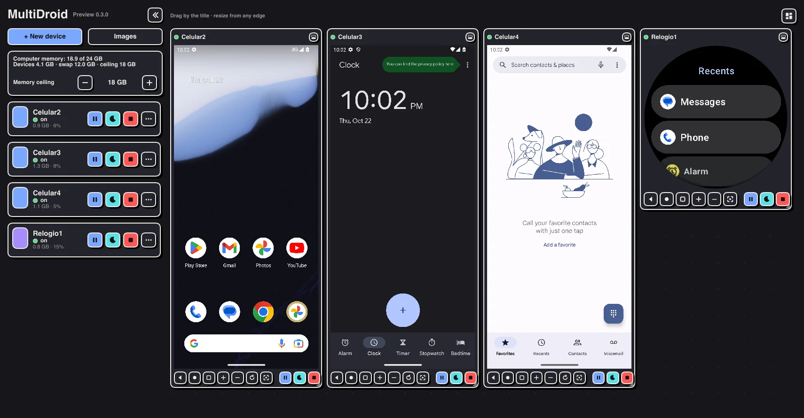
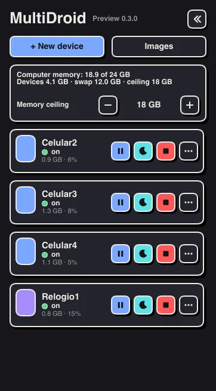

Choose your devices
Work with phones, tablets, foldables and Wear OS watches.
FREE & OPEN SOURCE · FOR DESKTOP
Run and organize Android devices side by side. Test across screens, keep accounts separate, and work from your desktop.

MultiDroid Preview 0.3 · Product interface rendered from the app
ONE WORKSPACE, MANY DEVICES
Keep your Android devices together, whether you are testing an app or working across accounts.
HOW IT WORKS
Arrange the devices you need and keep their controls within reach.
Work with phones, tablets, foldables and Wear OS watches.
Place and resize devices, or use automatic arrangement.
Use device controls and see the status of each emulator.
IN THE DETAILS
A clear view of what is running, with the controls you need close at hand.
Make the space yoursArrange your devices to suit the work in front of you.
See what is runningCheck each device’s status, memory and CPU in the panel.
Control each screenNavigate, adjust volume, rotate and take screenshots.
Features describe the Mac experience. Preview functionality can differ.

SEE MULTIDROID
Explore the workspace in eight seconds.
Video uses product images rendered from MultiDroid Preview 0.3.
03 / FIND YOUR VERSION
Start with the stable Mac release or help shape the early desktop previews.
0.2 · Apple Silicon
macOS 26 or later
0.3.0-alpha.3 · x86-64
Windows 10 / 11
0.3.0-alpha.3 · x86-64
Debian / Ubuntu
Windows and Linux builds are early previews and may be incomplete. macOS supports Apple Silicon; Windows and Linux support x86-64. The Mac preview is also available in the release notes. Windows may show a SmartScreen warning. Explore all releases ↗
Desktop preview. Features may differ from the native Mac release.
BEFORE YOU BEGIN
Android system images are downloaded separately and have their own licenses. Some apps, including banking apps, may not work in an emulator. MultiDroid does not automate accounts or bypass integrity checks.